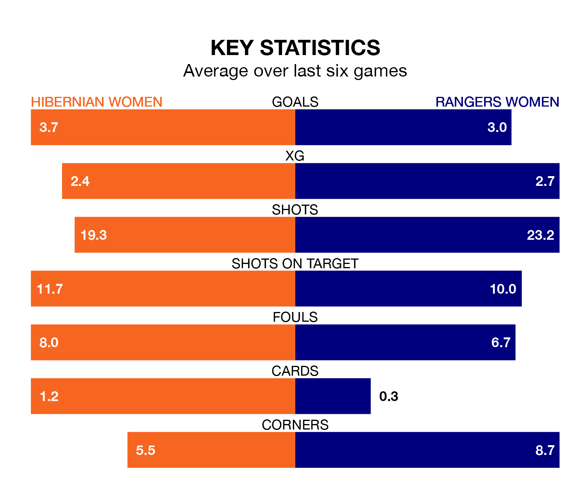

Sunday's match between Hibernian Women and Rangers Women promises to be one for the neutrals, as two of SWPL 1's most free-scoring sides go head-to-head.
Ahead of the game at the Meadowbank Stadium, Hibs and Rangers sit fourth and second in the goal-scoring charts, with 60 and 89 goals respectively.
Striker Jorian Baucom leads the way for the home side, having bagged 20 goals in their 21 games to date.
And Rio Hardy has been the main man in the opponents' penalty box for Rangers, with 18 goals.
Rangers are top of the table after 21 games, of which they have won 18 and drawn three, earning 57 points.
Hibernian are four places behind the visitors in fifth, with 12 wins and three draws putting them on 39 points.
With Jenna Fife between the sticks, Rangers can rely on one of the league's safest pair of hands. She has kept nine clean sheets in her 17 appearances this season, and no 'keeper has prevented the opposition scoring more often in SWPL 1.
In Hibs's net, Katie Fraine has six clean sheets in 14 games. She has conceded a goal every 68 minutes, nearly three times as often as the 191 minutes between goals for Fife.
In the last 10 years, Hibernian and Rangers have played each other on 12 occasions. Rangers won all of them.
On average, Hibs scored 0.1 goals and Rangers 2.5 in those matches.
Their last meeting was on October 15, when Rangers won 7-0 at home.
The home side are in good form in SWPL 1, with four wins and a draw from their last six games.
With four wins and two draws over that period, Rangers's form is slightly better – they have taken 14 points from 18, compared to Hibernian's 13.
Hibernian's last match was on February 18, a 1-1 draw against Partick Thistle Women, with Demi-Lee Falconer getting the goal for Hibs.
Rangers drew 1-1 with Celtic Women last time out, also on February 18, with Mia McAulay on the scoresheet.
Updated: 12:18 (UTC), 19/02/24